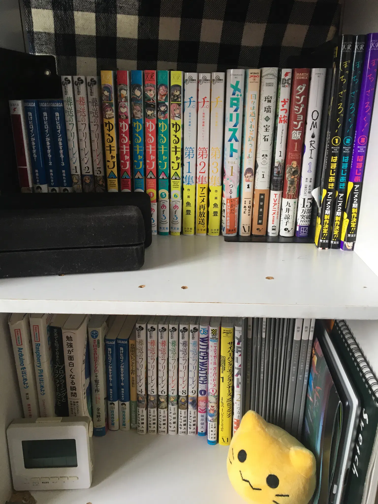
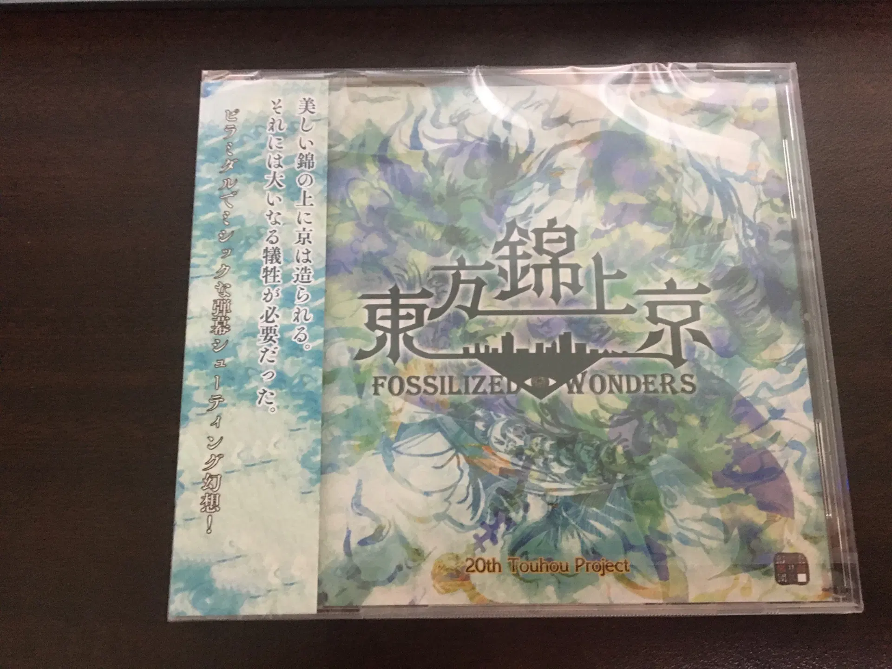
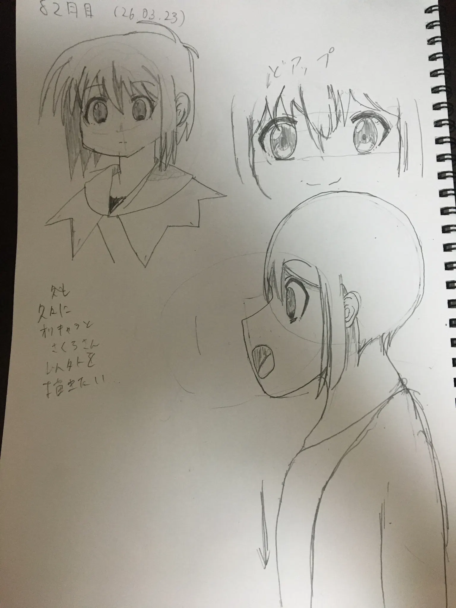

誕生日です
今日は私の誕生日です！！！！！！！！！！！！！！！！21歳になりました！！！！！
とっても、祝ってくれる人は現実には家族しかいないのですが…
今年の目標 Link to heading
今更ですが、今年の目標は、**「アルゴリズムから解放される」**ことに決めました。
この動画を見たことがきっかけです。結局YouTube見てるじゃねーか
はっきり言って、のインターネットはクソ・オブ・クソです。ビッグテック系のサービスのほとんどは生成AIによる低品質なコンテンツの量産により、サービスの質が低下しています。私にとってはその方がビッグテックが自滅してくれていいのですが
かくいう私も、コロナ時代以降ほとんどをインターネットに時間を浪費しており、気づけば今日21歳になっていました。早くも危機感を感じています。
そのため今年はなるべく「アルゴリズム」という存在から離れることを目標にします。「インターネットそのもの」から離れるべき、という声が出てきそうですが、実際には「アルゴリズム」から離れるだけで大きな違いが出ると思います。
脱大手SNSの挑戦 Link to heading
実はこの挑戦は、2020年から始まっていました。当時XがまだTwitterであったころ、それに代わるサービスを探していたのです。
2020年ごろにMastodonを見つけましたが、人が多くてTLが早すぎる、VPSでセルフホストできるほどのお金がない（当時はそもそもバイトをやっていない）などの理由で断念しました。
その半年か1年後にMisskey.ioを見つけ、「こういう世界もあるのか」といい、初めて大手の中央集権方SNS以外の世界を知り、そこから徐々にのめり込んでいきました。 2022年半ばぐらいにはイーロン・マスクにより、代替SNSへの移住が活発になったころ、そのうちの一つであるMisskeyにも多くの人が押し寄せ、それ以降「ビッグテックだけじゃない世界」が広まりつつあることに喜びを感じます。
脱ビッグテック Link to heading
一方で、私は2025年ごろまでYouTubeやXばかり見ていました。2024年度の受験が失敗したのはこれが原因と考えています。
そこで、2025年にはなるべくビッグテックや大手のSNSから距離を取るためにさまざまな策を取りました。YouTubeからInvidiousに変えたり、普段見るSNSをXからMisskeyに変えたり、検索エンジンをGoogleからDuckDuckGoに変えたり…色々やった後、現在はビッグテックのサービスからの依存を減らすことができています。（でも結局YouTubeはDuckDuckGo経由で見てしまってるわけですが…）
多くの人物が、「友達と連絡するためにはXやLINE、Instagramなどは絶対に必要だ」と考えています。ただし、個人的にはSNSがなくても、メッセンジャー（XMPPやIRCなど）や電話、物理的な手段などで代用ができると思います。
現在のインターネットは、SEOやAI量産サイトのせいで、まともなサイトが埋もれてしまっています。その現状が嫌いです。現在私はGoogle検索を使用しておらず、DuckDuckGoを使用していますが、これも中身はBingなので、近いうちにSearXNGに変えようと考えています。
余談ですが、MetaのCEO、マーク・ザッカーバーグが2018年ごろに議会公聴会で「自分が人間である」と主張した時、多くの人間が彼を責めました。
インターネットの時間を減らすために Link to heading
多くの現代人は少しでも暇な時間ができると、直ぐにスマートフォンを取り出してTikTokやYouTubeとかでショート動画を眺めています。
私は、このショート動画は時間の無駄と考えています。ドーパミンが出るだけで現実は虚無。我々は虚無を産業化することに成功しました。
そこで少しでもインターネットの時間を減らすために、アナログな趣味を増やすことにしました。
例えば、絵はタブレットなどではなくスケッチブックに描いたり、漫画や本は紙で買ったり… おそらく、紙やCDなど、物理的な媒体以上の信頼性を持つものは存在しないでしょう。クラウドなどアカウントが消えたら全部消えてしまいます。DRMが存在する場合はなおさらです。
そのため、DRMや面倒な縛りのない物理媒体になるべく手を出しています。Kindleなどには一切手を出していません。
それじゃあ最新の話が見れないじゃないかってなりますが…

また、部分的にデジタルになりますが、ゲーム機向けのゲームの多くや、東方などのような同人ゲームは物理媒体でも配布されています。

これらしか遊ばないのなら問題はないのですが、私にとって問題は海外のPCゲームです。
多くのインディーゲームがSteamなど、ダウンロード販売のみです。
これはGOGを使うか、種類は限られますがFangamer Japanなどを使うしかないでしょう。
「スマートフォン」は危険 Link to heading
Z世代は、過去最低の認知能力と言われています（はい、私はバカです）。ソーシャルメディアやスマートフォンを原因と言われています。
しかし、Z世代以外の世代の人間も、この現状を嘲笑することはできるのでしょうか？
Z世代以外の世代の多くの人間が、みんなスマートフォンを見ています。これはつまり、多くの人間がアルゴリズムに支配されているということです！！！（陰謀論）
そして、多くの人間が多くのサービスを無料で利用しているということは、多くの人間が少数の企業に自分のデータを渡しているということです。
これら少数の企業、つまりビッグテックは、それらから得た情報を他社、主に広告会社に売ることで、利益を得ています。
物事を行うためには、対価が必要です。「無料」のサービスでは、あなたが商品であることを忘れないでください。
勉強したければ本を買え Link to heading
「YouTubeは勉強に使える」。それはそうなのですが、ではもしYouTubeで勉強以外の動画を見たくなったらどうしますか？
ひとたびクリックするだけで、勉強とは関係ない動画がおすすめに大量に出てきます。
私は、この「アルゴリズム」という仕組みがある限り、YouTubeは勉強には向いていないと考えます。
さいごに Link to heading
長くなってしまいましたが、今年の目標は「アルゴリズムから解放される」ことです。
ところどころおかしな文章になってしまいましたが、端的に言うと、「ビッグテックが敵となってしまった現代、自分のことは自分で守れるようにしよう」ということです。
以上。
お絵描きのコーナー Link to heading
82日目。
